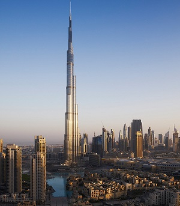
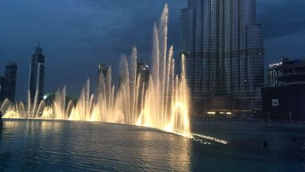
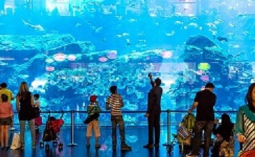
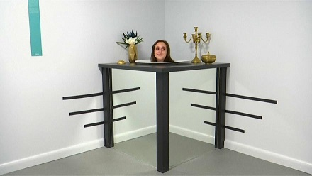

DUBAI
Eine Kulturstadt im Orient
Was gibt es in Dubai alles zu sehen?
Burj Khalifa
Das wohl bekannteste Gebäude Dubais ist das Burj Khalifa. Es ist seit April 2008 das höchste Gebäude der Welt und ist 828 Meter hoch. Dieser gigantische Wolkenkratzer wurde am 4. Januar 2010 eingeweiht und wurde von dem Architekten Adrain Smith geplant.
Wasserspiele
Täglich, gegen 18.00 Uhr, startet die Wasser- Licht- und Klangshow – im halbstündigen Rhythmus – jeweils für die Dauer eines ausgewählten Musiktitels. Alle 30 Minuten wechselt die Musik, das Spiel der Fontänen auch. Die Dubai Wassershow ist ca. 25 % größer als die Bellagio Fountain in Las Vegas und somit die größte Wasserfontäne, die jemals gebaut wurde.
Dubai Aquarium
Das Dubai Aquarium ist eine beliebte Touristenattraktion die sich in der Dubai Mall befindet. Die Dubai Mall bietet noch sehr viele weitere Attraktionen für die Besucher und diese ist auch gleichzeitig die größte Shopping Mall der Welt die man einmal gesehen haben muß wenn man in Dubai Urlaub macht. Allerdings ist das Dubai Aquarium eine der Hauptattraktion in der Dubai Mall und es soll auch eines der größten der Welt sein.Top
Museum of Illusions
Die neue Attraktion, die in der Erbe und kulturellen Entwicklung von Al Seef in der Nähe von Dubai Creek ihren Platz gefunden hat, spielt alle möglichen Tricks in den Gehirnen der Menschen. Sie lässt die Menschen sich fragen, ob sich die Welt um sie herum auf den Kopf stellt, und glaubt, ein Bild an der Wand pulsiertDie Dubai Edition des Museum of Illusions, die als Teil einer internationalen Museumskette eröffnet wurde, die 2015 erstmals in der kroatischen Hauptstadt Zagreb debütierte, ist die bisher größte mit über 80 interaktiven Exponaten, die die Köpfe von Menschen jeden Alters herausfordern.Top